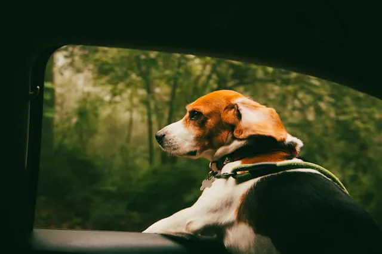

Vacaciones y mascotas: una decisión que requiere reflexión
El verano y las vacaciones son momentos esperados por muchas familias, y hoy las mascotas forman parte fundamental de ese descanso. Sin embargo, antes de decidir si tu perro o gato te acompañará en el viaje, es importante detenerse a evaluar su personalidad, estado de salud y capacidad de adaptación. No todas las mascotas disfrutan los cambios de rutina, los traslados largos o los ambientes desconocidos. Mientras algunas se adaptan con facilidad, otras pueden experimentar estrés, ansiedad o malestar, lo que termina afectando tanto su bienestar como la experiencia familiar.
"Las mejores vacaciones son aquellas donde el bienestar de tu mascota también está asegurado."
Qué considerar si decides viajar con tu mascota
Si decides llevar a tu mascota de vacaciones, la planificación es clave. Es fundamental elegir alojamientos realmente pet friendly, verificar normas del lugar y preparar un equipaje pensado especialmente para ella: alimento habitual, agua, cama, juguetes y elementos de higiene. Durante el traslado, la seguridad no es negociable: transportadoras, arneses o cinturones especiales ayudan a prevenir accidentes. Además, mantener horarios similares de alimentación, paseos y descanso contribuye a reducir el estrés y facilitar la adaptación al nuevo entorno.
Cuando quedarse también es una buena opción
En muchos casos, dejar a la mascota en casa o al cuidado de una persona de confianza puede ser la mejor alternativa. Permanecer en un entorno conocido, con rutinas estables y atención adecuada, suele ser menos estresante que viajar. Servicios como cuidadores, guarderías o familiares responsables pueden asegurar compañía, alimentación y paseos, evitando cambios bruscos. Lo más importante es que la decisión se tome pensando en las necesidades reales de la mascota, y no solo en el deseo de incluirla en el viaje.
Conclusiones
- No todas las mascotas disfrutan viajar; su personalidad y bienestar deben guiar la decisión.
- Planificar con anticipación es clave si tu mascota te acompaña de vacaciones.
- Dejarla al cuidado de personas responsables también puede ser una opción segura y amorosa.
¿Encuentras útil el artículo?
Compártelo con alguien más